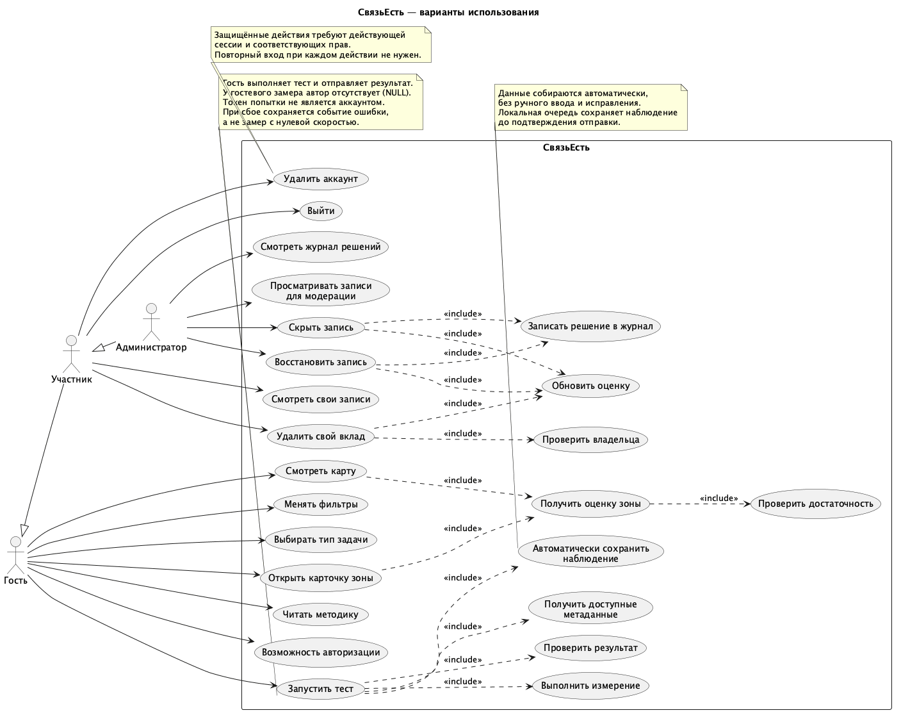
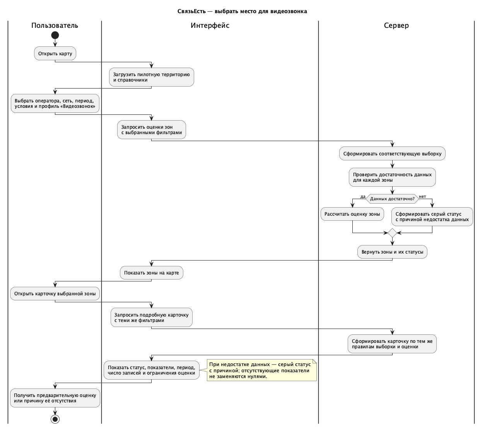
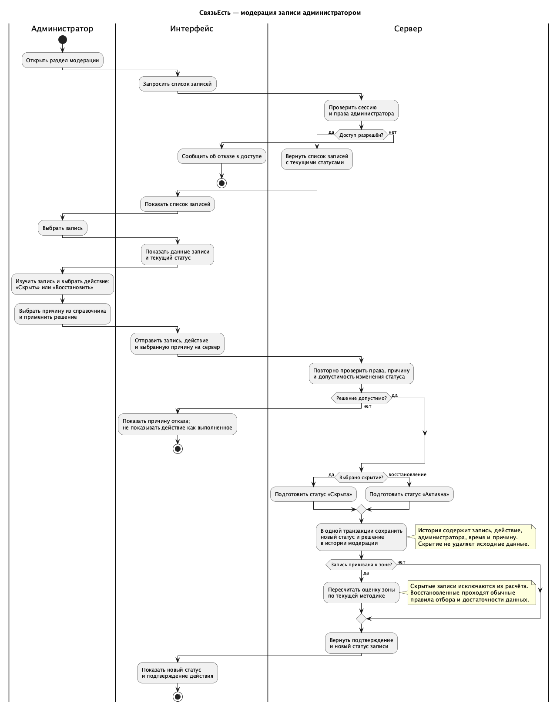
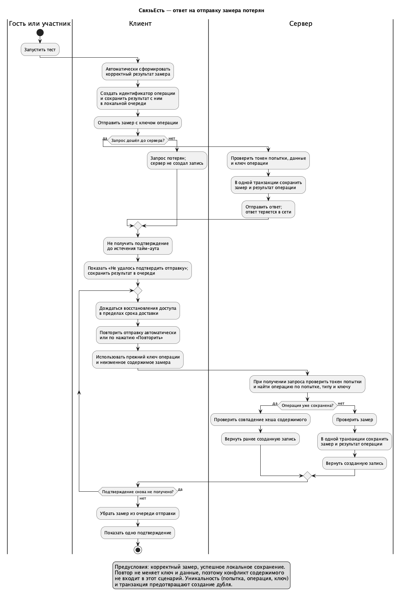

Верхнеуровневое представление состава подсистем и модулей, их ответственность на текущей итерации (прототип: клиент + демо-данные, без сервера).
Приложение «Связь Есть»
│
├── Клиентское приложение (apps/web) — интерфейс пользователя
│ ├── Карта зон: подложка OpenStreetMap, квадраты зон с цветом статуса,
│ │ фильтры, карточка зоны с объяснением оценки
│ ├── Экран теста связи: запуск замера, ход, результат или ошибка
│ └── Экран методики: правила оценки зон
│
├── Демо-адаптер данных — поставляет данные интерфейсу
│ ├── Демо-наблюдения (Ижевск) и справочники операторов
│ └── Симулятор замера связи
│
├── Пакет контрактов (packages/contracts) — общие типы и правила обмена данными
│ └── Описания структур, проверка корректности входных данных
│
└── Пакет расчёта (packages/domain) — бизнес-правила
├── Сетка зон: деление территории пилота на квадраты
└── Оценка зоны: фильтрация, дедупликация, достаточность, статус| Подсистема | Ответственность |
|---|---|
| Клиентское приложение | Отобразить карту зон и результаты, принять фильтры, провести тест связи |
| Демо-адаптер данных | Выдать интерфейсу наблюдения, справочники и результаты теста вместо сервера |
| Пакет контрактов | Единые структуры данных и проверка их корректности для клиента и адаптера |
| Пакет расчёта | Пересчитать наблюдения в статус и метрики зоны по методике |
Клиентское приложение → Пакет контрактов → Демо-адаптер данных → Пакет расчётаКлиент обращается к данным только через контракт; расчёт оценок находится в отдельном пакете, а не в интерфейсе. Замена демо-адаптера на сервер не меняет остальные подсистемы.
| Часть | Выбор | Обоснование |
|---|---|---|
| Язык | TypeScript | Общие типизированные сущности на клиенте и сервере |
| Интерфейс | React | Быстрота разработки, удобство |
| Сборка прототипа | Vite | Лёгкий и простой сборщик |
| Навигация | React Router | Основная библиотека для роутинга реакта |
| UI kit | Mantine 7 | Не нужно разрабатывать свой UI-kit |
| Карта | Leaflet + OpenStreetMap | Удобно и просто в подключении и использовании, не требует API токена |
| Тесты | Vitest | Детерминированные unit-тесты ядра с фиксированным временем |
| Сервер (план) | NestJS | Модули, контроллеры и сервисы с явными границами |
| Хранилище (план) | PostgreSQL + PostGIS | Связанные сущности, транзакции, пространственные запросы |
| Контракт API (план) | REST, JSON, OpenAPI | Явное описание запросов, ответов и ошибок |
Строки «(план)» — этапы 7–8 плана реализации, сейчас их кода нет. Полная версия раздела с техническими основаниями — architecture.md §2.
Источники — docs/diagrams/ (PlantUML; рядом с каждым
.puml лежат .png и .svg для
вставки в отчёт).

01-use-cases.puml / 01-use-cases.svg
Актёры: Гость → Участник → Администратор (наследование ролей). Основные сценарии: просмотр карты с фильтрами и профилем задачи, карточка зоны с оценкой и проверкой достаточности, чтение методики, запуск теста связи с автоматическим сбором метаданных, сохранение наблюдения, свои записи и удаление вклада, модерация администратором.

02-select-location.puml /
02-select-location.svg — выбор места для видеозвонка
(US-01–04): пользователь → интерфейс → сервер. Фильтры, запрос оценок
зон, показ зон и карточки, различение «нет данных» и «недостаточно
данных».

03-admin-moderation.puml /
03-admin-moderation.svg — модерация записи администратором
(US-09): проверка сессии и прав сервером, скрытие и восстановление с
причиной, пересчёт затронутой зоны; чужие изменения запрещены.

04-measurement-retry.puml /
04-measurement-retry.svg — ответ на отправку замера потерян
(US-12, NFR-07): ключ идемпотентности операции, локальная очередь,
повторная доставка, исключение дублей.
Контракты заданы в packages/contracts: типы данных,
проверка корректности (zod-схемы) и интерфейс шлюза данных. Расчётное
ядро — packages/domain.
| Структура | Поля | Смысл |
|---|---|---|
MeasurementInput |
attemptId, testSessionId,
occurredAt, cellId, operatorId,
networkType, transport, vpn,
environment, downloadMbps,
uploadMbps, rttMs |
Результат успешного теста. Лишние поля (например,
authorId) отклоняются — авторство назначает сервер |
FailureEventInput |
те же метаданные + stage, errorCode |
Неудачный тест. Поля скоростей отсутствуют — пропуск не равен нулю |
ObservationReceipt |
id, attemptId, kind,
status, submittedAt |
Квитанция о приёме записи |
CellFilters |
operatorId, networkType,
environment, profileCode,
periodFrom, periodTo |
Группа фильтров: карта и карточка всегда согласованы |
CellSummary |
status, metrics, sampleCount,
complaintCount, lastMeasurementDate,
reasonCodes |
Оценка зоны: цвет, метрики, объяснение статуса |
GridConfig |
gridVersion, cellSizeMeters,
projectionParams, pilotBoundary |
Параметры сетки и границы пилота |
DataGatewayЕдиная точка доступа интерфейса к данным; демо-адаптер и будущий HTTP-клиент реализуют один и тот же контракт:
getGrid(signal) → GridConfig
getCatalog(signal) → CatalogResponse
getMapCells(filters, bbox?, signal) → MapCellsResponse
getCellSummary(cellId, filters, bbox?, signal) → CellSummary
createTestSession(input, token, idempotencyKey) → TestSession
submitObservation(input, token, idempotencyKey) → ObservationReceiptbbox — видимая область карты: данные нарезаются по окну
просмотра. idempotencyKey — ключ операции: повтор запроса
возвращает прежний результат без дублей. signal — отмена
запроса.
packages/domainresolveCell(point, grid) → cellId | null координаты → ячейка (или вне пилота)
cellPolygon(cellId, grid) → GeoJSON-кольцо геометрия для карты
cellIndexAt(point, grid) → {column, row} индексы без проверки границы
parseCellId / formatCellId → CellRef разбор и сборка идентификатора
evaluateCell(input) → CellSummary главная функция оценкиevaluateCell принимает наблюдения одной ячейки, фильтры
и текущее время, возвращает статус и метрики. Функция чистая: без React,
HTTP и БД, детерминирована при фиксированном времени — на неё написаны
unit-тесты границ методики.
Данные передаются в JSON; GeoJSON FeatureCollection для
карты (полигоны ячеек со статусами). Входные записи проверяются схемами:
неизвестные поля и некорректные значения (отрицательная скорость и т.п.)
отклоняются с кодом VALIDATION_ERROR, а не приводятся к
значениям по умолчанию.
Статус: Принято
Контекст. Требования ЛР 1: US-01–04 (карта с фильтрами и карточкой зоны), US-06–08 (сбор наблюдений и оценка зоны), US-17 (speed test), NFR-08 (пересчёт ≤60 с). Сервер по плану появляется на этапах 7–8, а прототип должен быть запускаемым уже сейчас. Команда — два человека, проект учебный.
Рассмотренные альтернативы:
Принятое решение. Монорепозиторий на npm workspaces:
apps/web — интерфейс без бизнес-расчётов;
packages/contracts — типы, zod-схемы и интерфейс шлюза
DataGateway; packages/domain — чистое ядро
методики (evaluateCell, сетка), не зависящее от React, HTTP
и БД. Клиент обращается к данным только через DataGateway;
демо-адаптер заменяется HTTP-клиентом с тем же контрактом без изменения
UI.
Последствия. Упрощается: unit-тесты методики с фиксированным временем, переиспользование ядра сервером, замена источника данных. Усложняется: три пакета вместо одного приложения — workspace-каркас и общий typecheck. Риски: демо-адаптер может «прирасти» к UI, если компоненты начнут импортировать его напрямую — граница держится контрактом.
Роль агента. Агент предложил разбиение на три пакета и правило «расчёт не в JSX», сгенерировал сравнение вариантов. Студент выбрал объём итерации («фундамент + карта»), UI-набор и порядок этапов; позже скорректировал решение о подсистеме карты (ADR-003). Демо-адаптер как «временный сервер с тем же контрактом» — предложение агента, принятое студентом без правок.
Статус: Принято
Контекст. Требования ЛР 1: US-06–08, US-09 (модерация с журналом), US-10 (удаление данных, NFR-05), NFR-02 (100 тыс. записей, p95 ≤1 с), NFR-08. Замеры геопривязаны — нужны пространственные запросы по видимой области. В прототипе сервера ещё нет (ADR-001), данные демо-генерируются.
Рассмотренные альтернативы:
grid_cells) — отклонена при
переходе на динамическую сетку: границы вычисляются, а не хранятся
(ADR-005).Принятое решение. Целевое хранилище — PostgreSQL с
PostGIS: 8 таблиц, пространственный индекс границы пилота,
транзакционная запись «наблюдение + квитанция». Идентификатор ячейки —
текстовое поле cell_id на наблюдении («версия:столбец:ряд»)
с индексом для группировки; таблицы квадратов нет. В прототипе хранилище
заменено демо-адаптером в памяти с тем же контрактом; перенос на
PostgreSQL — этап 7 плана.
Последствия. Упрощается: запуск без инфраструктуры,
минимальная схема. Усложняется: валидность cell_id держится
схемой контракта, а не внешним ключом; при смене сетки нужен
gridVersion в идентификаторе. Риски: при росте данных
агрегатам потребуется кэш ради p95 ≤1 с.
Роль агента. Агент предложил PostgreSQL + PostGIS в
ЛР 1 и сравнил с MongoDB/SQLite; при пересмотре указал противоречие
таблицы квадратов с динамической сеткой и предложил текстовый
cell_id. Решение «динамическая сетка» — студенческое; агент
оценил его последствия для методики. Разделение «целевое хранилище /
память в прототипе» — предложение агента, принятое без изменений.
Статус: Принято (заменяет первоначальный выбор Яндекс Карт JS API v3)
Контекст. Карта — основной экран (US-01–04, US-11): полигоны ячеек поверх подложки. Первая редакция архитектуры выбирала Яндекс Карты v3 по API-ключу. Ключ так и не активировался: API отдавал «403 Invalid api key» при статусе «активен» в кабинете; ограничения по Referer принимают только домены без порта, что ломает локальную разработку; активация до 15 минут. Прототип должен запускаться без внешних ключей.
Рассмотренные альтернативы:
Принятое решение. Тайлы OpenStreetMap через Leaflet: без API-ключей, атрибуция OSM обязательна по лицензии. Полигоны строятся из GeoJSON собственных модулей (библиотека не участвует в расчёте цвета и не получает точных координат замеров), рендер — canvas для сотен полигонов. Согласовано 15.11.2026; меняется только модуль карты, контракты и ядро не тронуты.
Последствия. Упрощается: запуск и развёртывание без ключей, проверка на статическом хостинге. Усложняется: своя интеграция полигонов; локализация тайлов хуже яндексовской. Риски: лимиты публичных тайлов OSM при росте трафика — для пилота рассмотреть свой тайл-сервер или коммерческого провайдера.
Роль агента. Исходный выбор Яндекса — из документации ЛР 1; агент подключал интеграцию, диагностировал отказ (403, ORB, ограничения формы кабинета) и предложил список альтернатив. Студент выбрал Leaflet + OSM и сформулировал требования к демо (Ижевск, плотные мок-данные, динамическая сетка 25×25 с пересчётом на лету). Агент реализовал провайдер, сохранив контракт карты.
Статус: Принято
Контекст. Требования ЛР 1: US-08 (оценка зоны), US-04 (карточка с объяснением), NFR-08, US-07 (сбой — не нулевой замер). Параметры — стартовые гипотезы до калибровки: старение вкладов, достаточность выборки, пороги профилей (базовая ≥1/≥0.5 Мбит/с, RTT ≤300 мс; видеозвонок ≥5/≥3 Мбит/с, RTT ≤150 мс).
Рассмотренные альтернативы:
Принятое решение. Методика
2-guest-draft как чистая функция evaluateCell:
окно 30 дней; вес 2^(−возраст_дней/14); достаточность ≥5
замеров из разных сессий за ≥2 даты, иначе
insufficient_data с кодами причин; дедуп — известный автор
один вклад в сутки (в TZ пилота), гость — один итог на сессию; допуск:
cellular, оператор известен, VPN не обнаружен; цвет по
взвешенной доле прошедших: зелёная ≥0.8, жёлтая ≥0.5, красная ниже,
границы включительные; средние отдельно от цвета; события ошибок — в
complaintCount, не в скорости. Параметры вынесены в
MethodologyConfig.
Последствия. Упрощается: объяснение статуса (reasonCodes), детерминированные тесты границ, смена порогов без правки логики. Усложняется: аккуратная работа с часовыми поясами и полуинтервалом периода; параметры — гипотезы до калибровки (этап 10). Риски: на старте много серых зон из-за плотности данных.
Роль агента. Агент перевёл требования в формальные
правила, спроектировал структуру evaluateCell и написал
тесты граничных случаев. Студент утвердил параметры и корректировал
пограничную семантику, найденную тестами агента (включительность
порогов, смешение периода фильтра с окном). Решение «гостевые участвуют
в цвете» — студенческое из ЛР 1; агент обеспечил его выполнение в коде и
демо-наборах.
Статус: Принято
Контекст. Первая редакция ER-модели содержала 13 таблиц. Сервер — этапы 7–8, команда — два человека. Требования ЛР 1: US-09, US-10 (NFR-05), US-12 (идемпотентная повторная отправка), US-06–07 (наблюдения двух видов). Каждая таблица должна отвечать на вопрос «что сломается без неё».
Рассмотренные альтернативы:
kind.Принятое решение. Схема сокращена до 8 таблиц:
users, sessions, test_sessions, operators, observations,
measurement_details, complaint_details, moderation_actions. Удалены:
grid_cells (ячейка — поле наблюдения, ADR-002);
idempotency_requests (повтор ловится
UNIQUE(attempt_id) + проверкой токена);
methodology_versions, task_profiles (методика
— конфигурация кода); deletion_events (объединена с
модерацией в «журнал решений»: target_type,
target_id, moderator_id NULL для самоудаления,
purge_after).
Последствия. Упрощается: миграции и сопровождение;
аудит — один журнал. Усложняется: появление живого редактирования
методики потребует вернуть таблицу версий (миграция); идемпотентность
ограничена попыткой теста. Риски: полиморфная ссылка журнала без
внешнего ключа — целостность на стороне кода; cell_id
валидируется схемой контракта.
Роль агента. Агент провёл ревью первой редакции
(11.11.2026): указал на перебор таблиц и предложил кандидатов на
удаление (idempotency_requests,
methodology_versions, task_profiles). Студент
принял часть предложений, отклонил объединение таблиц деталей (сохранил
XOR-структуру) и сам предложил два сокращения, которых агент не
предлагал: удаление таблицы ячеек и слияние журнала удалений с
модерацией. Агент исполнил изменения в диаграмме и документе; итог
согласован 25.11.2026.